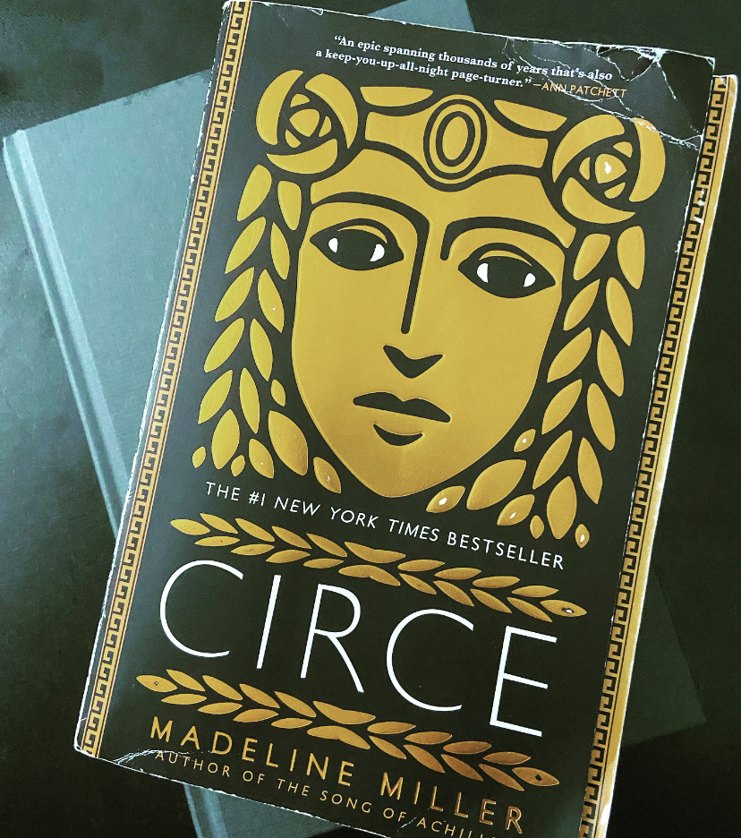

Mere Mortality

“I thought once that gods are the opposite of death, but I can see now they are more dead than anything, for they are unchanging, and can hold nothing in their hands.” pg 385’
In 2021, I set a goal of reading 60 books in a year. I started off with a pre-selected stack but ultimately ended up straying from that as recommendations, new releases and best sellers started catching my eye. I was immensely proud of myself when I completed it and thoroughly enjoyed sharing what a wonderful reading journey it had been. I had no regrets. I wouldn’t have changed anything.
Until now.
A book that continuously caught my eye when browsing through book stores or online must-read lists was Madeline Miller’s novel, Circe. While I’m certain that it was the intriguing black and gold cover that drew me in at first, it was the part of my brain obsessed with gods, heroes and stories of Ancient Greece (which had been dormant since the conclusion of the Greek Mythology curriculum in sixth grade) that kept bringing me back to it. For some reason, though, I didn’t read it. I picked it up and thought about it. I carried it around the store; I even added it to my Amazon cart once, but I never actually bought it. Looking back, I think that it was due in large part to the fact that it looks like a pretty long book and I was pretty certain I already knew the story and thus needed something else in order to keep the 60-book-train moving.
And I completely regret it.
Unlike most narratives of these stories, Miller tells the myth from Circe’s perspective. (She is the daughter of the sun god and a nymph and thus an immortal.) This perspective gives the readers greater insight into why Circe’s life played out as it did: helping us to more fully understand how she fits (or doesn’t fit) into the world of Olympians and Trojans; making sense of the complicated relationship between gods and mortals; finding comfort in solidarity and ultimately even questioning whether a truest love at the price of death is greater than immortality.
While the full story of the goddess Circe is a depressing one, Miller does a beautiful job of turning the events on Circe’s timeline into moments of learning, understanding and growth for both the goddess and her audience. The most significant shift in Circe’s personal development is her transition from thinking of mortals as frail, weak and pitiable beings to seeing beauty in both the fragility and ephemerality of the mortal life.
Because I was in the sixth grade when my obsession with stories of Ancient Greece started, it is entirely possible that the mortality aspect of the stories was lost on me. However, reading them now with my 30’s looming, it couldn’t be more clear. Especially because, as a nearing-30-year-old, I have been looking for a way to express my sadness over the time that has passed, my joy over all of those sweet memories, my excitement for the future and my desire to savor the now. Needless to say, I have come up lacking. I haven’t been able to find the words until Circe (or more precisely, Miller) did. In the last few chapters of the book, she summed up the basics of the human condition more eloquently than I had even thought possible. She explains it in the form of a dream or a vision of what mortal life could look like for Circe: adventures both at home and in far-away lands, children–and eventually family reunions, cuts that leave scars showing the progress she has made in her herb and potions study, assurances that things will be ok and finding comfort. She even envisions herself recognizing the fear of “life’s precariousness” (pg 384) and ultimately questioning the idea that immortality is a gift.
As the scenes shift from times of youth to later years when Circe and her love’s hair has turned gray and their kids have left home, Circe finds herself recalling the precious moments shared between her mortal love and their daughters. She remembers moments both of joy and sorrow but recognizes the same feelings of comfort and safety in each of them. Though her physical aging and the passage of time bring her sadness, she acknowledges the wealth of luck that she has to have lived a life where she was able to grow, learn, change, love fully and be loved so fully that comfort and safety were ever present, even in times of pain or distress. In the final moments of her vision, she feels how thankful she is for the time that has passed, despite the ways her body shows it and how thankful she is to still be able to hear her husband’s breath next to her as he sleeps, knowing one day she no longer will. In the vision of her life as a mortal, Circe is simultaneously aware of life’s hopes, fears, joys, sadness and, ultimately, the precariousness of life.
It is in the pondering of this pain/joy paradox that Circe begins to realize that the dishonesty, disloyalty and selfishness in life and love that she has endured thus far are due to the inability of the gods to love anyone but themselves. They are unable to grow and therefore they are unable to change and ultimately unable to love others in the way that Circe, from her time spent with mortals, has learned is needed in order to make life worthwhile.
I chose not to read this book on my 60-book journey because I was certain it would rekindle my love for the stories from Ancient Greece (causing my already planned reading list to change) and I was right, it absolutely did. What I didn’t realize was that it would also kindle a love for my own story—an appreciation for the growth that has come from past years, the excitement of making plans for the future, the contentment of being able to hear my loved ones breathing in this moment, and the knowledge that a life lived with love in its purest form is a far greater gift than immortality could ever offer.
As scary as it is, the precariousness of this life is what makes living it so beautiful.